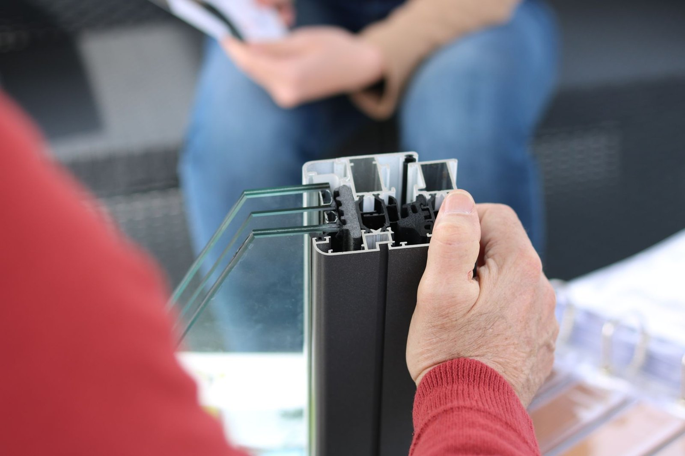
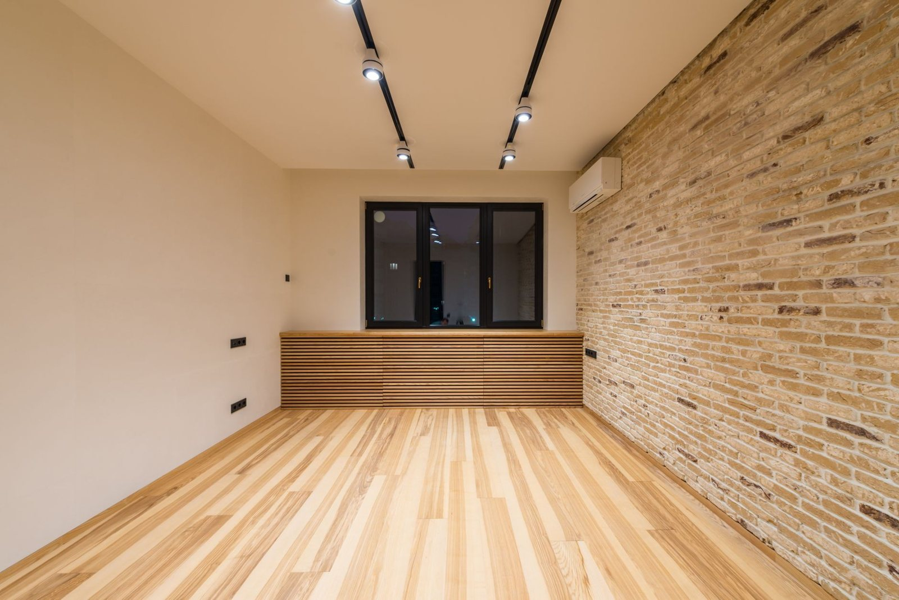
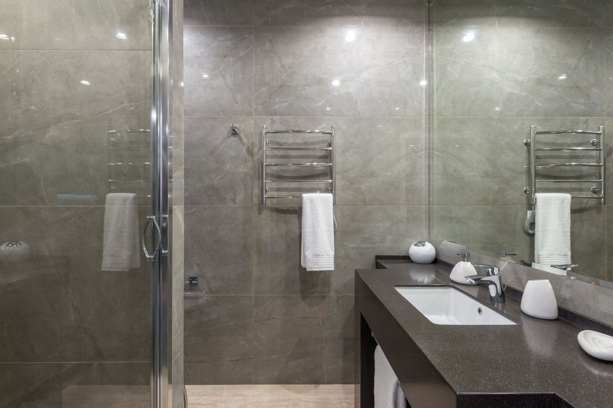

Stolarka i remonty

Okna PVC i aluminiowe
Przewiewa przy ramie, a rachunki za ogrzewanie rosną? Montujemy okna Drutex z PVC i aluminium, dobrane pod konkretne pomieszczenia: cieplejsze pakiety od północy, cichsze szyby od ulicy. Stare okno wyjmujemy w całości, nowe osadzamy na ciepłym montażu, a ościeża poprawiamy od razu, bez szukania tynkarza.

Remonty domów i mieszkań
Stary dom albo mieszkanie po rodzicach? Najpierw sprawdzamy, co siedzi w ścianach: instalacje, wilgoć, krzywe podłogi. Dopiero potem podajemy cenę. Prowadzimy remont od skucia starych tynków po ostatnią listwę i mówimy wprost, co spokojnie można zostawić, bo remontu nie robi się dla samego remontu.

Drzwi zewnętrzne i wewnętrzne
Drzwi wejściowe mają trzymać ciepło i wytrzymać próbę wyważenia. Montujemy drzwi stalowe KMT z ciepłym progiem, wypoziomowane tak, żeby domykały się bez trzaskania. W środku domu stawiamy drzwi pokojowe z ościeżnicą regulowaną, która kryje nierówności ściany, a otwór po starej ościeżnicy wykańczamy do gotowej ściany.

Łazienki od podstaw
Łazienka to najtrudniejsze pomieszczenie w domu i najczęstsze miejsce fuszerki. Skuwamy stare płytki do surowego muru, kładziemy hydroizolację, potem glazurę i biały montaż. Kolejność ustawiamy tak, żeby każda warstwa zdążyła wyschnąć, zanim przykryje ją następna. Płytki i armaturę wybierasz Ty, kleje i chemię dobieramy my.

Bramy garażowe, rolety i parapety
Stara brama uchylna hałasuje i wypuszcza ciepło z garażu? Montujemy ocieplane bramy garażowe KMT. Do okien dokładamy rolety, moskitiery i parapety, a przy nowych oknach skrzynki rolet chowamy w ociepleniu, żeby nie było ich widać z ulicy. Sterowanie ręczne albo z pilota, zależnie od budżetu.

Gładzie, malowanie i podłogi
Ściany po wymianie okien albo po latach w starym domu? Wyrównujemy je gładzią, szlifujemy i malujemy, sufity poprawiamy razem z resztą. Na podłogi kładziemy panele, deski albo płytki, listwy docinamy na miejscu. Mokre etapy planujemy tak, żeby zdążyły wyschnąć przed podłogą i ostatnim malowaniem.
Która z usług Cię interesuje?
Napisz, co chcesz zrobić - odpowiemy z propozycją i wyceną.